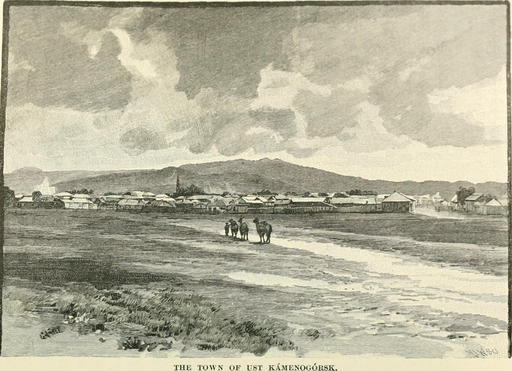

Ф. 1-П, оп. 1, д. 245 Обзор Семипалатинской области за 1893 год
Приложение ко всеподданнейшему отчёту военного губернатора Семипалатинской области. Содержит сведения о пространстве и народонаселении, управлении, торговле и промыслах пяти уездов области.
Как ссылаться: ГА ВКО. Ф. 1-П. Оп. 1. Д. 245. Л. 1–48.СкопированоПутеводители по этому фонду
Путеводитель по фонду 1-П, 1854–1920 Семипалатинская область: административное деление Перепись населения 1905 года
Титульный лист. Печатный текст, штамп канцелярии.
Статус доступности
Дело оцифровано и разрешено к публикации. Просмотр онлайн; скачивание отдельных листов в низком разрешении. Мастер-копия (TIFF) на сайте не публикуется.
Для дел с ограниченным доступом (например, д. 246, хрупкий материал) отображается только информационная карточка: описание, причина ограничения и условия доступа. Сайт не принимает заявок на доступ.
Метаданные карточки
| Архивный шифрФонд, опись и номер дела | ГА ВКО. Ф. 1-П. Оп. 1. Д. 245 |
| Номер фонда / описи / дела | 1-П / 1 / 245 |
| Заголовок делаНазвание, данное делопроизводителем | Обзор Семипалатинской области за 1893 год |
| Крайние датыПервый и последний документ в деле | 01.01.1894 – 31.12.1894 |
| Тип документа | Письменный источник: годовой отчёт |
| Язык документа | Русский (дореформенная орфография) |
| Количество листов | 48 л., печатный текст с рукописными пометами |
| Место хранения | Усть-Каменогорск, главное здание, ул. Головкова, 26/1 |
| Происхождение | Канцелярия военного губернатора Семипалатинской области |
| Цифровая копия | Есть, 48 сканов (JPG, 300 dpi) |
Похожие документы
Рекомендации по теме, периоду и месту. Подбираются по открытым метаданным; личные данные посетителей не используются.

Ф. 1-П, оп. 1, д. 411
Почему: та же опись и тема «население»
Ф. 14-Ф, оп. 1, д. 3, 1851
Почему: тот же населённый пункт
Фотография, Ф. 14-Ф
Почему: тот же период и место
Ф. 3-Т, 1868–1919
Почему: связанный фонд (переписка с областным правлением)Раздел I/А Обзоры области
244 Обзор Семипалатинской области за 1892 год
- Датировка:
- 1893
246 Обзор Семипалатинской области за 1894 год
- Просмотр:
- только описание (хрупкий материал)